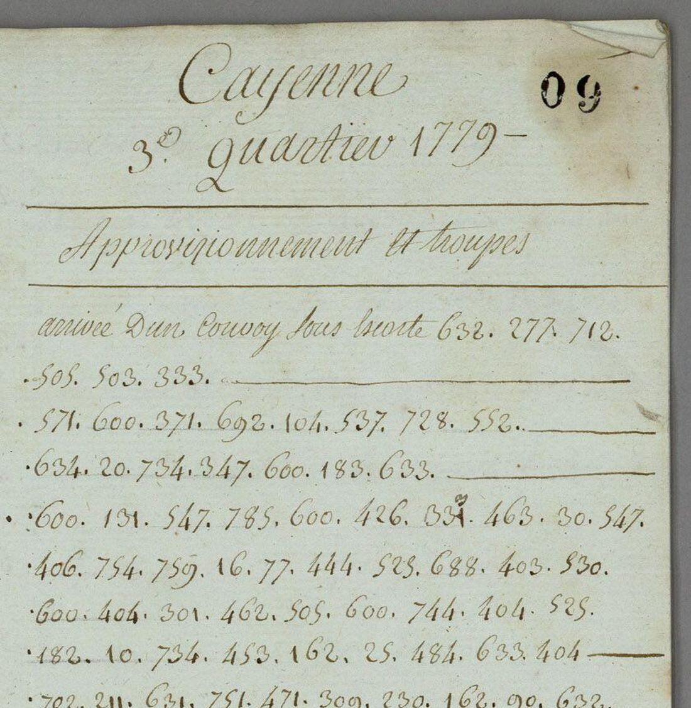
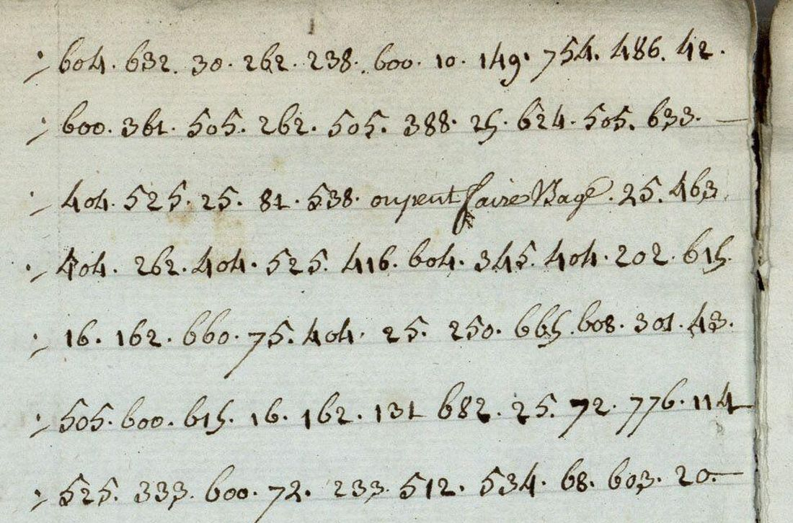

At a glanceKey from adjacent plaintext · partial (70% of the cipher)
- The letters
- Jacau de Fiedmond, governor of French Guiana, to the Navy minister, from Cayenne: a duplicate of his letter of 19 July 1779 on supplies and troops, with a postscript, and his signed report of 29 August 1779 on the defence of the colony.
- Where
- Archives nationales d’outre-mer, Aix-en-Provence, COL C14 51, ff. 5–10 and 16–23 (views 009–014 and 018–025). The archive’s calendar marks both as ciphered and not translated. Not on DECODE.
- The cipher
- A French nomenclator in numbers from 5 to 888, separated by dots: letters, syllables and whole words in no alphabetical order, with words and phrases left in clear between the numbers.
- How the key was found
- Brice Dudout aligned 401 values on two letters of the same series that survive with their clear text, then had the key extended from the context of the two letters. The frozen key passed its one held-out test, 0.703 against 0.644 for the best of 400 control keys, which is a weak result.
- What it says
- The convoy has arrived but the Court’s orders were carried out badly; there is no bomb-proof powder magazine, no workmen, no sailors. The second letter plans the defence of Cayenne island against a landing: “mais nous n’auons pas de pareilles troupes”.
- Credit
- Transcription, key, test, reading and translation by Brice Dudout (pull request #420), on a clear copy and a decipherment of the time (1779 and 1780) filed in the same series. The catalogue entry was the project’s.
- Still open
- 636 words are graded probable (most rest on a value the key rates probable), 309 are restored from the sense and 75 are unresolved; 70 of the 448 numbers have no value. The two cipher and clear pairs are not in the repository, so the values taken from them could not be verified here.
01 The letters
Volume C14 51 of the colonial correspondence holds the letters received from Guiana in 1779. Two pieces by the governor, Jacau de Fiedmond, are largely in cipher, and the calendar of the Archives nationales d’outre-mer describes them as “passage chiffré non traduit” and “pièce chiffrée non traduite”. No decipherment of the time is filed with them, and no edition was found.
- The letter of 19 July 1779 (ff. 5–10, views 009–014) is a duplicate, marked “Dup.ta”, headed in clear “Approvisionnement et troupes”. A ciphered summary comes first, then the letter under the clear date “Du 19 juillet 1779”, with long clear passages, and a postscript. It has 1,556 code groups.
- The letter of 29 August 1779 (ff. 16–23, views 018–025) is signed Fiedmond. Its title, “Deffence de la colonie”, and a summary of ten heads are in cipher, and the heads return as underlined headings in the body. It has 5,277 code groups.

The catalogue entry for these letters (no. 1201) dated the first one 13 July 1779. The letter is dated 19 July in clear; “le 13 de ce mois” in its first sentence is the day the convoy arrived.
The earlier Guiana letters of 1757–62 use a different code, which has its own folder in the repository (targets/orvilliers1759).
02 The code and its key
The two letters hold 6,833 groups and 448 different numbers, the lowest 5 and the highest 888. Single letters (404 s, 505 r, 10 l, 30 e, 604 n, 785 t), syllables (734 ti, 347 on, 301 re, 333 te, 744 ment) and whole words (600 de, 72 la, 25 les, 575 pour, 233 colonie, 642 artillerie, 18 hommes) are mixed with no alphabetical order in the numbers. The clerk often leaves the end of a word to the reader: 25 stands for le or les, 534 for il or ils.
The key was learned in two steps.
- From two pairs of the time. In the same series a cipher letter of 1 September 1779 (C14 51 ff. 102–111) lies beside its clear copy (ff. 98–101), and a cipher of 29 April 1780 (C14 52 ff. 15–16) beside a sheet headed “Déchiffrement” (ff. 17–19v). Aligning numbers with clear text gave a key of 401 values, called K-Guy1780b (29 October 2026).
- From the context of the two letters. On 11 November 2026 a language model, given the two letters and the first key, proposed corrections and further values read from the sense. The result, K-Guy1780c, has 454 entries, each with a status: 225 “sure” and 161 “probable” values kept from the pairs, 8 pair values corrected on a second look at the alignment, 6 pair values replaced from context, 53 values restored from context alone, and 1 withdrawn.
The statuses matter for what counts as read. By the contributor’s own cross-validation on the pairs, a “sure” value is right about 87% of the time and a “probable” one about 55%; 121 of the 161 probable values were seen only once in the pairs. The sure values carry most of the text: 83.7% of the groups in the first letter and 85.1% in the second. Neither the 1757–62 Guiana key nor the keys of Bouillé’s Martinique letters of 1778–79 fit these letters; the contributor tested them against permuted keys.
The key table is in the repository under CC BY 4.0. The transcriptions of the two pairs and the first key are not: they stay with the contributor, so the values taken from the pairs could not be checked here against their source.
03 The held-out test
The key from the pairs was tested twice against clear text of the time that had been set aside, and failed both tests. The bar fixed in advance was 0.85 of characters and 0.75 of words. The first test, on the end of the 1779 pair, gave 0.758 and 0.647; the second, on the end of the 1780 pair, gave 0.805 and 0.707 with the 401-value key. The sources disagree on the first: the contributor's validation file gives it to the 401-value key too, the profile's solution step to an earlier version of 296 values. Both scores stood far above the control keys (at most 0.291 of characters), so the code was the right one, but the key was incomplete. A third measurement, against a memoir that turned out not to be a version of the text, was void.
For the extended key no clear text of the time was left. On 28 October, before any key existed, the postscript of the first letter and the last five cipher lines of the second (118 groups) had been set aside, and they were removed from the copies sent to the model. The key was frozen, and the protocol, the key and the scripts were hashed before a single measurement. The measure S is the share of groups whose decoded letters fall inside a word of a French lexicon. The rule was: S above all 400 control keys, and at least 0.656, a threshold calibrated on the other pages.
- S = 0.703 (83 of 118 groups);
- best of 200 keys with the same values permuted: 0.576; best of 200 keys shuffled among values of the same length: 0.644;
- rank 1 of 401, above the threshold: the key passed its rule.
The verdict recorded is “weak”, for four reasons. The portion is small. The margin over the best control is 0.059. The reference is a word list, a lenient judge: the control keys average 0.446 and 0.511. And the test says little about the values the model added: only 8 of the 118 groups carry a value taken from context, and they are 6 of the 59 such values in the key (26, 134, 138, 149, 453, 717). With the values from the pairs alone the same portion scores 0.619; the first key scored 0.653. What the test shows is that the code is the right one and that six added values fit a new passage. The other 53 are untested, and the held-out portion is now used up.
An independent re-run with the repository’s lexicon gave 0.695 (82 of 118) against 0.559 and 0.636, rank 1 of 401, and none of 2,000 further control keys reached it. The small differences come from the contributor’s lexicon, which adds words from clear texts that are not in the repository. The order of events (the portion set aside on 28 October, the key frozen at 14:07 on 11 November before the measurement at 21:18) is by the contributor’s record: the pull request is one commit. The contributor also declares that a file comparison displayed the held-out groups, undecoded, after the key was frozen. The protocol’s header gives its own time as 21 h 20, two minutes after the file that hashes it; the stamped files give 21:18:04 for the hash and 21:18:10 for the measurement.
04 The reading
Every cipher word of both letters was graded by the contributor: certain when each of its groups has a sure value and the letters are exactly those values; probable when it rests on a probable or corrected value, a doubtful figure, or a letter the clerk left out; restored when it rests on a value from context or on the sense; and unresolved.
| Letter | Cipher words | Certain | Probable | Restored | Unresolved | Read (certain) |
|---|---|---|---|---|---|---|
| 19 July, with postscript | 754 | 508 | 159 | 63 | 24 | 67.4% |
| 29 August | 2,650 | 1,876 | 477 | 246 | 51 | 70.8% |
| Both | 3,404 | 2,384 | 636 | 309 | 75 | 70.0% |
The share given here counts the certain words only. A probable word mostly stands on a value that is right about half the time and is accepted because it makes sense, and this site does not count a word that the sense supplies. The contributor counts certain and probable words together, which gives 88.5% and 88.8%. Both letters are below the 95% that a complete reading needs under either count. No certain or probable word uses a value taken from context.
Both letters build into continuous administrative French that joins the clear passages around the numbers, and an English translation follows them sentence by sentence. In the quotations below, {braces} mark probable words and [brackets] restored ones, in the spelling of the cipher (u for v, i for j).
19 July 1779. The convoy under the King’s corvette has come in with troops, victuals and munitions, but “il est facheux que les ordres et {intetion} de la {cou} ne {puoissent} {etre} [exete] que {fort} {iparfaitement}”: useless things were sent, and the cartridge pouches (“les gibernes”) were forgotten. The repair of the works, meant only to put the place back in its state of 1771, was stopped “par Mr l’abbé terray” (clear in the manuscript) and is still unfinished for want of timber and workmen. There is no masonry powder magazine “a l’epreuue de la {bombe}”. The arsenal and the port have no workmen, timber or sailors. One gunboat came where two were ordered, and in place of “Six Bons” carpenters, “{deux} {mauuais} [apprentifs]”. Gunboats like the one built at Cayenne in 1772 would serve best. The chevalier de La Serre is given the service of the coasts. The artillery company is to be raised by thirty-three men. The postscript asks that ships bound for the colony make a recognition signal in sight of the island.
29 August 1779. Ten heads on the defence of Cayenne island against an attack: gunboats and carpenters; the powder magazine; the artillery; the recruits, with their drunkenness and desertion; a critique of a defence memoir by “l’auteur digne de la confiance de Mgr” (the contributor takes him to be La Serre); the impossibility of guarding every cove (Remontabo, Remire, Mahury) with the men at hand; the enemy’s likely moves, a landing far from the town, the islet at the mouth of the Mahury, the Cabassou creek; fire precautions in a town built of wood; an entrenchment on the port side and the retreat of the garrison. With seasoned troops in proportion to the enemy’s the defence would not be in doubt, “mais nous n’auons pas de pareilles troupes”. The defence will be “[continuee] et {soustenue} [iusqua] [l’impossible]” and then carried into the country, after a project Fiedmond says he sent to the Court in 1762.
One value of the frozen key is contradicted by the reading. The key gives 398 = “ils” (probable). In the held-out lines the group opens a word that the sense makes [ap]prouvoit, and twice elsewhere [ap]prentifs, so 398 is very probably “ap”. The key was left frozen and the three words are counted as restored.
05 Checks at integration
The pull request was verified independently before it was written up. The counts of groups, key entries and graded words reproduce, the hashes of the transcription and of the frozen key match, and a second decoder gives the same value as the decryption file for every group.

The transcription was made by an AI agent from the archive’s images and has had no human check. Against the images, 336 groups of views 009 and 014 (the opening of the first letter, its end and the whole held-out postscript) were compared by the verifier, and 102 groups of view 022 (lines 1–7 and 27–30) at integration: all 438 agree. Two figures the transcription marks doubtful on those views are visibly overwritten, and one it marks “800?” is a plain 800. The transcription gives the clear words of view 022, line 3, as “ou peut faire l’usage”; the image reads “on peut faire usage”. The remaining pages of the second letter were not compared at full resolution.
06 What remains open
- The pairs are not in the repository. The transcriptions of C14 51 ff. 98–111 and C14 52 ff. 15–19v and the first key stay with the contributor. The values taken from them carry all the certain words, and they could not be verified here.
- 636 probable words (159 and 477). Most rest on a probable value; the pairs are too short to confirm them.
- 309 restored words (63 and 246), from values taken from context or contradicted by the sense, or from numbers with no key value read by the sense: 398, and 461 = ef, which reads “fe”. Of the 59 context values in the key, 53 are untested. A third text of the time in this code, such as the minister’s answer, would test them; none is online.
- 75 unresolved words (24 and 51). 70 of the 448 numbers have no value in the key and take 83 groups; most occur once or twice. Among them are the river names 102, 515, 271 and 720. No table of this code is known.
- 182 or 183. 183.633 is deffen-ce throughout. Four times the transcription has 182.633 where the sense wants the same word (views 010, 012, 023, 024); whether those figures are 182 or 183 was not checked on the images (the archive's image server refused the request on 12 November 2026). Other doubtful figures: 801 or 301, 605, 695, 71, 189.
- The reading was made by AI agents and re-read as sentences at integration. No person has read it against the images.
Full texts
The transcription and the decryption of every document on this page, so that the reading can be used and checked. Short files are shown here; all are in the repository.
f9, Fiedmond to the minister, Cayenne 19 July 1779, 'Approvisionnement et troupes', with postscript read in part
The convoy under the King's corvette l'Hirondelle has arrived with troops, victuals and munitions, but the Court's orders were carried out imperfectly (cartridge-pouches forgotten); the repair of the works (to restore their state of 1771) stopped by the abbé Terray and unfinished; no bomb-proof powder magazine; arsenal and port without workmen, timber or sailors; one gunboat sent instead of two and two bad apprentices instead of six good carpenters; gunboats like the one built in 1772 are best; La Serre given the coast service, Desprez and Mingy; the artillery company to be raised by 33 men. Postscript: ships bound for the colony should make a recognition signal off the island.
Builds coherent sentences, but under the read bar of 95% of words read as sense (67% here); the holes are marked in the reading.
Transcription: transcription.txt
Decryption: decryption.txt
Reading: reading.md
Translation: translation.md
f16, Fiedmond to the minister, Cayenne 29 August 1779, 'Deffence de la colonie' read in part
Report under ten heads on the defence of Cayenne island: gunboats and carpenters, the powder magazine, artillery and the gunners, the new recruits (drunkenness, desertion), a critique of the defence memoir of 'the author worthy of Monseigneur's confidence', the impossibility of guarding every cove (Remontabo, Remire, Mahury) with the troops at hand, the enemy's likely manoeuvres (landing far from the town, the Mahury islet, the Cabassou creek), fire precautions in a wooden town, a retrenchment on the port side and the retreat of the garrison, resistance to the last and then in the country after the project of 1762; orders asked of the minister.
Builds coherent sentences, but under the read bar of 95% of words read as sense (71% here); the holes are marked in the reading.
Transcription: transcription.txt
Decryption: decryption.txt
Reading: reading.md
Translation: translation.md
Key: key.tsv
07 Sources
- Archives nationales d’outre-mer, Aix-en-Provence, Secrétariat d’État à la Marine, correspondance à l’arrivée, Guyane, COL C14 51, ff. 5–10 (views 009–014) and ff. 16–23 (views 018–025); calendar entries on FranceArchives (second item).
- The key material, not reproduced here: COL C14 51 ff. 102–111 (cipher, 1 September 1779) with ff. 98–101 (clear copy); COL C14 52 ff. 15–16 (cipher, 29 April 1780) with ff. 17–19v (“Déchiffrement”).
- Brice Dudout (Europe chiffrée), transcription, key K-Guy1780c, held-out test, reading and translation, pull request #420, 11 November 2026.
- Prior art searched for the catalogue entry on 3 November 2026: no DECODE record, nothing found by web search on Cryptiana, by George Lasry or in HistoCrypt, and no edition of Fiedmond’s 1779 reports.
Working files: targets/fiedmond1779 in the repository (notes, transcription, key, word tables, the frozen test files).
Cite this page
Brice Dudout and Daniel Bourdeau, “Fiedmond to the Navy minister, Cayenne, 1779: the defence of Guiana in cipher”, Cyphersolver, posted 12 November 2026, https://cyphersolver.com/fiedmond1779.html.